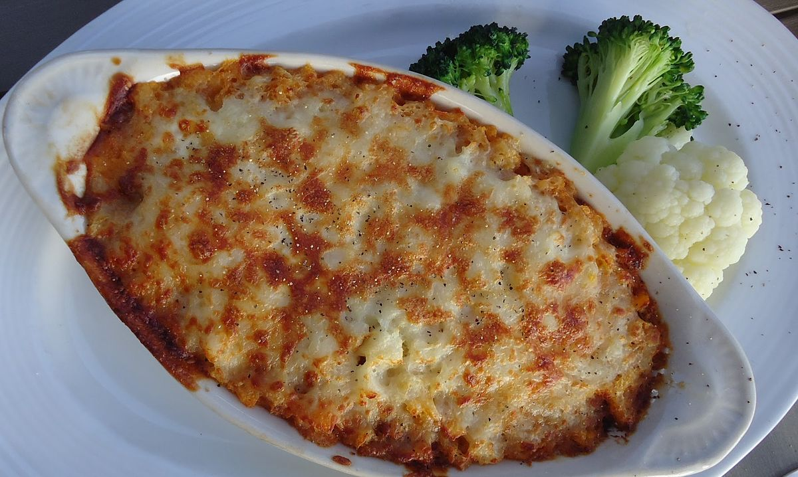

Pastel de papas
Home

Este es un delicioso pastel de papas, una receta tradicional que seguro te encantará.
Ingredientes
- 4 papas medianas
- 500g de carne picada
- 1 cebolla picada
- 2 huevos
- 1 taza de queso rallado
- Sal y pimienta al gusto
Instrucciones
- Precalentar el horno a 180°C (350°F).
- Hervir las papas hasta que estén tiernas, luego hacer un puré.
- En una sartén, cocinar la carne picada con la cebolla hasta que esté dorada.
- Mezclar el puré de papas con la carne, los huevos y el queso.
- Verter la mezcla en un molde y hornear durante 30 minutos.